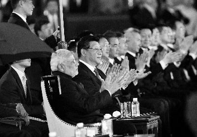
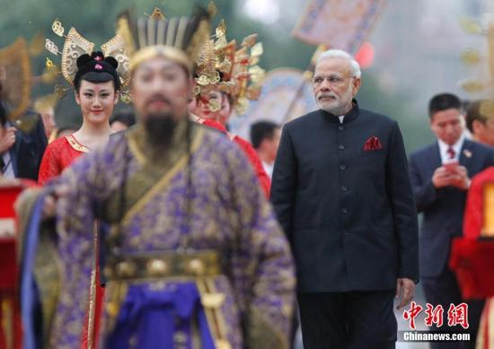

印度总理莫迪于5月14日至16日对中国进行正式访问。莫迪将先后访问西安、北京、上海，开展文化、政治，以及经贸上的系列活动，着重与民间交流。3天内，莫迪安排了不少于20项活动，将参观大雁塔、推广印度瑜伽，向中国赠送菩提树苗，并前往清华、复旦两所高校交流。

国家主席习近平14日下午在同印度总理莫迪举行正式会见后，两国领导人在西安参观，共话中印友好历史，就中印文化交流及各领域合作等共同关心的问题继续交换意见。

国务院总理李克强15日上午在人民大会堂东门外广场举行仪式，欢迎来华进行正式访问的印度总理莫迪。
国务院总理李克强15日上午在人民大会堂同印度总理莫迪举行会谈。双方就中印携手共谋发展，深化各领域务实合作，构建更加紧密的发展伙伴关系达成共识。会谈后，两国总理共同见证了双方铁路、矿业、地方交往等领域24个合作文件的签署。